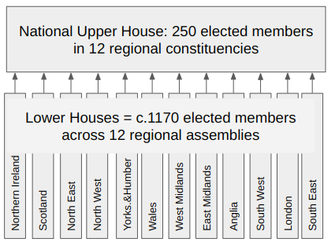

For more background, please have a read of the Medium article which is a companion to this data resource.
What if the United Kingdom had always had proportional representation?
This section contains data and analysis of an experiment into introducing forms of proportional representation already present in UK elections to our national elections. As shown in the image below, a two-tier system of government is proposed: A nationwide senate could function as an upper house, with twelve devolved assemblies (nine new assemblies for the regions of England as well as the current national executives for Scotland, Wales and Northern Ireland). In this proposed system, there would be a similar number of representatives as in the current system. Only this time, every member is democratically and fairly elected. In the left navigation pane, results for each real-life election in this proposed system can be found.

This page imagines this system has already been in place, and uses real life election results within the proposed system to see how different things could have been. UK General Election results from 1955-2019 obtained from Electoral Calculus are used to calculate national elections using a regional proportional system. The code used to calculate these alternative election results can be found and freely used on my Github.
What would the Upper House look like, and how are members elected?
A 250-member senate to replace the House of Lords would be directly elected by the population. Members would be elected from the 12 geographical and cultural regions of the UK, as shown in the image below (credit: Electoral Calculus). These have been used previously to elect Members of the European Parliament, and for other statistical and administative purposes. Each region's allocation of seats is assigned based on population, or to be more dynamic, the size of the electorate at a given election.

Because this would be the only national parliament in the proposed system, alternative election results are drawn from each United Kingdom general election since 1955, and we can draw comparisons from there. Just like in the European Union elections in the past, the D'Hondt method would be used to allocate members in each of the twelve regions.
How can we model devolved regional English assemblies?
The short answer to this is that it is straightforward, and would follow what is already the case in Scotland and Wales. Not only would this deliver equal decision making to English regions of roughly similar populations, but also resolve democratic issues such as the West Lothian Question. This means more specifically that regions maintain geographical constituency which have a local representative which voters tend to prefer, but also a proportional element through 'additional members' being elected proportionally. As with the Scottish parliament and the Welsh Senedd, English devolved assemblies could consist of between 1/2 and 2/3 of their seats as First-Past-The-Post constituency members. The rest (between 1/3 and 1/2) of the seats are allocated within the Additional Member System, i.e. using the D'Hondt method while carrying over the seat totals from the constituency vote.
Again, we can model constituency members by simply retaining Westminster constituencies in each regional assembly. The top-up members would be elected on a second ballot paper, the 'regional list' as will be familiar to voters from Scotland and Wales. We can simulate how the public behave on a regional list by using data from previous European Union elections in each of the former regional constituencies which are exactly the same regions the proposed assemblies come from.
What would this look like in practice? An example from the 2019 General and EU elections:
Will these elections be fairer?
In my opinion... absolutely, yes! (...)